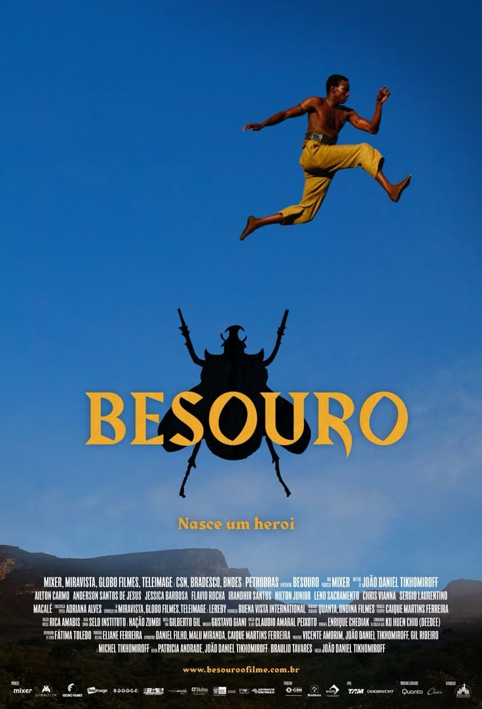
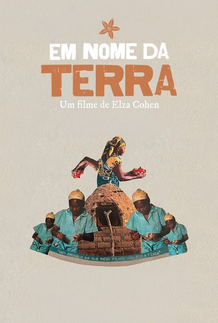
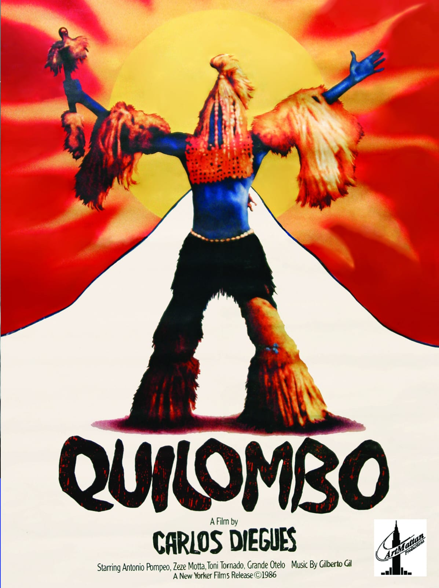
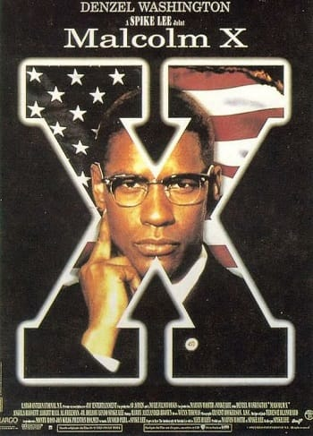

PANTERA NEGRA
O rei T'Challa retorna a Wakanda para assumir o trono, mas logo se vê desafiado por um inimigo do passado. O filme celebra a cultura africana e traz uma poderosa mensagem de identidade e resistência

BESOURO
Bahia, década de 20. No interior os negros continuavam sendo tratados como escravos, apesar da abolição da escravatura ter ocorrido décadas antes. Entre eles está Manoel (Aílton Carmo), que quando criança foi apresentado à capoeira pelo Mestre Alípio (Macalé). O tutor tentou ensiná-lo não apenas os golpes da capoeira, mas também as virtudes da concentração e da justiça. A escolha pelo nome Besouro foi devido à identificação que Manoel teve com o inseto, que segundo suas características não deveria voar. Ao crescer, Besouro recebe a função de defender seu povo, combatendo a opressão e o preconceito existentes.
A COR PÚRPURA
Celie é uma menina negra no começo do século XX, que sofre com um pai violento que a assedia. Levada para as mãos de outro homem quase tão ruim quanto, ela passa os anos observando e aceitando calada os abusos a que é submetida.
SELMA
Conta a história do ativista Martin Luther King, que em 1965 liderou a Marcha pelos Direitos Civis, garantindo o direito ao voto para os negros.

EM NOME DA TERRA
Um documentário brasileiro que mostra a luta dos povos indígenas pela preservação das suas terras e cultura, e como a especulação e a destruição das florestas têm afetado suas comunidades.

QUILOMBO
Em torno de 1650, um grupo de escravos se rebela num engenho de Pernambuco e ruma ao Quilombo dos Palmares, onde uma nação de ex-escravos fugidos resiste ao cerco colonial. Entre eles, está Ganga Zumba, príncipe africano e futuro líder de Palmares, durante muitos anos. Mais tarde, seu herdeiro e afilhado, Zumbi, contesta as ideias conciliatórias de Ganga Zumba, enfrentando o maior exército jamais visto na história colonial brasileira.
PECADORES
Em Pecadores, Michael B. Jordan interpreta irmãos gêmeos que voltam à sua cidade natal com o objetivo de reconstruir a vida e apagar um passado conturbado. Esses acontecimentos, porém, voltam a atormentá-los quando uma força maligna passa a persegui-los, trazendo para a superfície medos e traumas. Esse mal busca tomar conta da cidade e de todos os cidadãos, obrigando-os a lutar para sobreviver. Mais do que contornar os demônios dominadores e famintos por poder (e sangue), Smoke e Stack (Michael B. Jordan) terão que lidar com as lendas e os mitos ameaçadores que podem estar por trás desse terror. Dirigido por Ryan Coogler (mesmo realizador de Pantera Negra e Creed) numa parceria já consagrada com Michael B. Jordan, Pecadores traz um thriller intenso com elementos sobrenaturais numa história repleta de mistérios.

TRADIÇÃO E VALORES MORAIS
Documentário. TODO: sinopse

MALCOLM X
Biografia do famoso líder afro-americano (Denzel Washington) que teve o pai, um pastor, assassinado pela Ku Klux Klan e sua mãe internada por insanidade. Ele foi um malandro de rua e enquanto esteve preso descobriu o islamismo. Malcolm faz sua conversão religiosa como um discípulo messiânico de Elijah Muhammad (Al Freeman Jr.). Ele se torna um fervoroso orador do movimento e se casa com Betty Shabazz (Angela Bassett). Malcolm X prega uma doutrina de ódio contra o homem branco até que, anos mais tarde, quando fez uma peregrinação à Meca, abranda suas convicções. Foi nesta época que se converteu ao original islamismo e se tornou um "Sunni Muslim", mudando o nome para El-Hajj Malik Al-Shabazz, mas o esforço de quebrar o rígido dogma da Nação do Islã teve trágicos resultados.